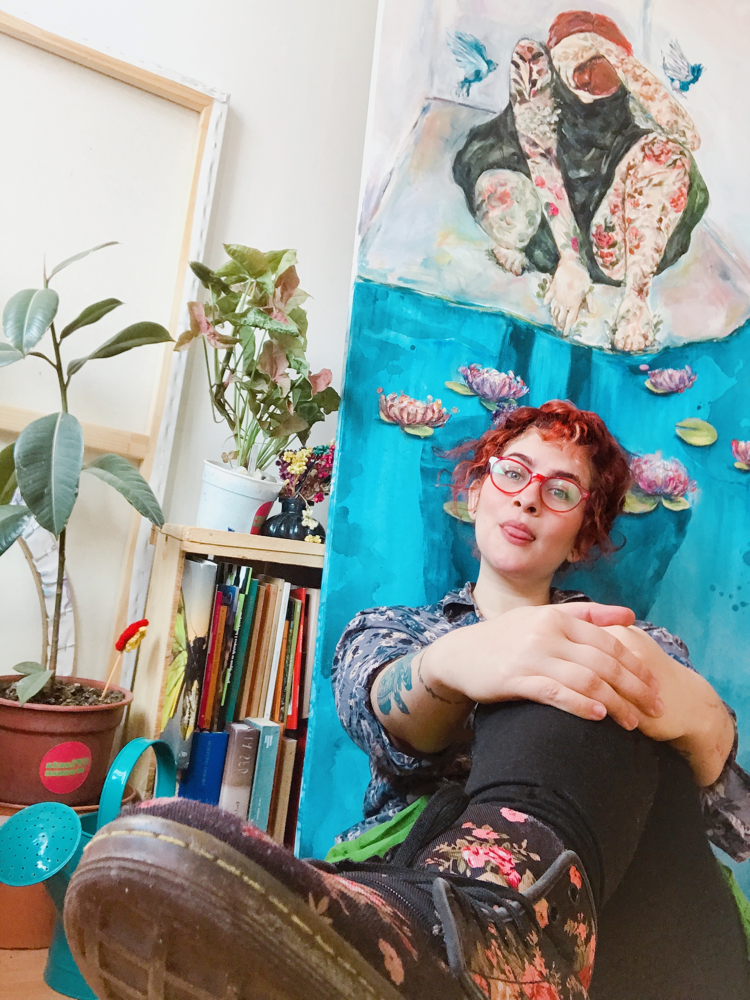

Newton
Demostró que la luz blanca contiene todos los colores del espectro visible.
Editorial · Moda · Color
Evento Académico · ECCI 2026
Una experiencia académica sobre teoría del color, percepción humana y su aplicación en el diseño y la moda.
Explorar la experienciaIntroducción
Este sitio recoge la experiencia académica vivida en el evento Moda ECCI, un espacio en el que se exploró el color desde múltiples enfoques: la física de la luz, la fisiología del ojo, la psicología, la historia del arte y su aplicación práctica en la moda y el diseño.
El contenido está basado en una conferencia dictada por la colorista certificada Sara Viloria, y complementado con una segunda charla titulada "El Color es un Lenguaje Caprichoso", presentada en Bogotá, Colombia. Ambas experiencias se integran aquí en un recorrido único: desde Newton y su prisma hasta las paletas de color que usamos hoy en la industria de la moda.
Actividad académica · SENA – ADSO
La Conferencista

Percepción
El color no existe como tal en el mundo físico: existe en la intersección entre la luz, los objetos y el cerebro humano.
Demostró que la luz blanca contiene todos los colores del espectro visible.
La luz entra por la córnea, atraviesa el cristalino y llega a la retina, donde los conos (sensibles al color) y los bastones (sensibles a la luz y la oscuridad) transforman las ondas electromagnéticas en señales nerviosas.
El cerebro construye el color — por eso decimos que es un lenguaje caprichoso.
"El color es el lugar donde nuestro cerebro y el universo se encuentran."
Paul Klee
"Hola Bogotá — el color nos recibe en cada esquina, en cada mural, en cada piel."
Visual · Paletas
Trece tarjetas de color extraídas de la vida cotidiana — cada fotografía traducida en paleta, matiz y escala cromática.
13 frames · ColorCambio automático · desliza · flechas · clic para ampliar
Fundamentos
La identidad pura del color ("rojo", "azul", "amarillo"); corresponde a la longitud de onda dominante.
Qué tan claro u oscuro es un color (tintes y sombras).
Intensidad o pureza del color: vibrante vs. grisáceo.
Colores cálidos (rojo, naranja, amarillo) vs. fríos (azul, verde, violeta).
El color cambia de significado según contexto, luz, cultura y observador.
Tres tipos de conos en la retina captan rojo, verde y azul; el cerebro combina estas señales para crear millones de colores.
Cronología
Un recorrido construido por filósofos, científicos y artistas que se desafiaron mutuamente a lo largo de los siglos.
El filósofo pitagórico propuso que la Tierra gira alrededor de un "fuego central". Esta concepción circular del universo influyó en cómo Newton organizaría los colores en un círculo, como los planetas alrededor del sol.
Descompuso la luz blanca con un prisma en 7 colores (rojo, naranja, amarillo, verde, azul, índigo y violeta), elegidos para corresponder con las 7 notas musicales. Dobló el espectro en un círculo, uniendo los extremos (rojo y violeta).
Su Teoría de los Colores fue el primer intento sistemático de relacionar el color con la percepción y la emoción humana, sentando las bases de la psicología del color moderna.
Adaptó la obra del mineralogista Abraham Werner para crear un sistema que comparaba cada tono con elementos de la naturaleza. Darwin lo usó en sus diarios durante el viaje del Beagle.
Michel Eugène Chevreul, químico de los Gobelinos de París, publicó en 1839 el primer atlas de color sistemático, descubriendo el fenómeno del contraste simultáneo (los colores adyacentes se afectan entre sí). Sus muestras de tela clasificadas por color son consideradas precursoras de Pantone.
Composición
El círculo cromático no impone reglas: ofrece posibilidades. Cualquier combinación geométrica dentro de él produce una armonía válida.
Colores opuestos en el círculo; máximo contraste.
Tres colores formando un triángulo equilátero o isósceles; vibrante y equilibrado.
Cuatro colores en formación geométrica; rica variedad.
Colores adyacentes en el círculo; armoniosos y naturales.
Un color más los dos vecinos de su complementario; menos tenso pero igualmente vivo.
"¿Qué quiero decir? — Esa es la pregunta que debe anteceder a cualquier elección de color."
Legado
Físico, matemático y alquimista inglés. Creó el primer círculo cromático con 7 colores asociados a notas musicales.
Poeta, dramaturgo y científico alemán. Estudió el color desde la percepción y la emoción, desafiando el enfoque puramente físico de Newton.
Leonardo da Vinci, Botticelli y Rafael exploraron el color como herramienta narrativa y emocional — el sfumato de Da Vinci y los colores luminosos de Botticelli en El Nacimiento de Venus son hitos del uso intencional del color.
Aplicación
Moda y Diseño
"Una persona con colores nunca está sola."
Créditos
Aprendices del programa ADSO del SENA que diseñaron y desarrollaron este sitio web como parte del proyecto académico Moda ECCI 2026.
"El color es un lenguaje caprichoso — aprenderlo es aprender a hablar con el universo."
Desde Newton hasta los tintoreros de París, desde la retina hasta los murales de Bogotá y las pasarelas de moda, el color ha sido siempre una conversación entre la luz, el ojo y el alma humana. Dominarlo no es un privilegio artístico: es una herramienta para todos — y especialmente para quienes diseñan, crean e interpretan moda.